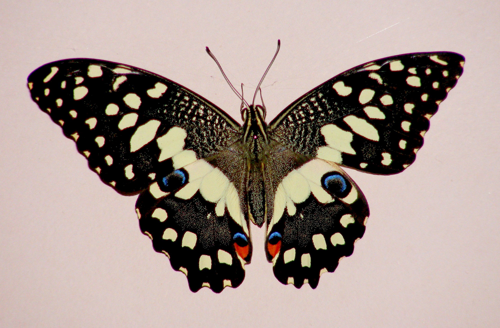

المملكة العربية السعودية — وزارة التعليم
كتاب العلوم — الجزء الأول من المقرر — طبعة ١٤٤٧ / ٢٠٢٥
الحيواناتُ اللافقاريةُ
الصف الرابع الابتدائي
إعداد: نايف المطيري
موقع الدرس
أينَ نحنُ في الكتابِ؟ صفحات ٥٦ – ٦٣
الوحدة الأولى المخلوقات الحية
الفصل الثاني المملكة الحيوانية
الدرس الأول الحيوانات اللافقاريةصفحات ٥٦ – ٦٣
السؤالُ الأساسيُّ: كيفَ أقارنُ الحيواناتِ بعضَها ببعضٍ؟ (ص ٥٨)
الأهداف
أهدافُ التعلُّمِ مستخلصة من ص ٥٦ – ٦٣
في نهايةِ الدرسِ أكونُ قادرًا على أنْ:
أُميِّزَ بينَ الفقارياتِ واللافقارياتِ. أُسمِّيَ مجموعاتِ اللافقارياتِ الثمانيَ. أصفَ الإسفنجياتِ واللاسعاتِ والرخوياتِ وشوكياتِ الجلدِ. أُعرِّفَ الهيكلَ الداخليَّ والهيكلَ الخارجيَّ. أُصنِّفَ المفصلياتِ والديدانَ في مجموعاتِها. التهيئة
نشاطُ الاستكشافِ ص ٥٧ — سؤال الكتاب
كيفَ نعرفُ أنَّ دودةَ الأرضِ حيوانٌ؟ ما الصفاتُ التي تجعلُ منْ دودةِ الأرضِ حيوانًا؟
معرفة سابقة
ماذا أعرفُ منْ قبلُ؟ تمهيد تربوي
مملكةُ الحيواناتِ عديدةُ الخلايا، تتحرَّكُ ولا تصنعُ غذاءَها
الشعبةُ تتشابهُ أفرادُها في صفةٍ كوجودِ عمودٍ فقريٍّ
التصنيفُ نضعُ المتشابهَ في مجموعاتٍ
اليومَ ماذا عنِ الحيواناتِ بلا عمودٍ فقريٍّ؟
توضيح إضافي: عرفْنا في الدرسِ السابقِ الشعبةَ وصفةَ العمودِ الفقريِّ، واليومَ نتعمَّقُ فيها.
المفردات
المفرداتُ العلميةُ (١) ص ٥٨ — مفردات الكتاب
لافقاريٌّ حيوانٌ ليسَ لهُ عمودٌ فقريٌّ.
الإسفنجياتُ أبسطُ اللافقارياتِ، ولمعظمِها شكلٌ يشبهُ كيسًا لهُ فتحةٌ في أعلاهُ.
اللاسعاتُ حيواناتٌ لها أجزاءٌ تسمَّى لوامسَ تشبهُ الأذرعَ، ينتهي كلٌّ منها بخلايا لاسعةٍ.
الرخوياتُ حيواناتٌ لافقاريةٌ أجسامُها ليِّنةٌ.
المفردات
المفرداتُ العلميةُ (٢) ص ٥٨ — مفردات الكتاب
شوكياتُ الجلدِ لها جلدٌ يحملُ أشواكًا، ولها دعامةٌ داخليةٌ.
هيكلٌ داخليٌّ الدعامةُ الداخليةُ في شوكياتِ الجلدِ.
المفصلياتُ أكبرُ مجموعةٍ في اللافقارياتِ، لها أرجلٌ مفصليةٌ وأجسامُها مقسَّمةٌ إلى أجزاءٍ.
هيكلٌ خارجيٌّ هيكلٌ صلبٌ يحمي جسمَ المفصلياتِ ويحفظُهُ رطبًا.
المفرداتُ الثمانِ كما وردتْ في صفحةِ «أقرأُ وأتعلَّمُ» ص ٥٨.
مهارة القراءة
الفكرةُ الرئيسةُ والتفاصيلُ ص ٥٨ — مهارة القراءة في الكتاب
الفكرةُ الرئيسةُ التفاصيلُ ما أهمُّ ما يقولُهُ النصُّ؟ ما الذي يدعمُها ويوضِّحُها؟
الفكرة الرئيسة
السؤالُ الأساسيُّ ص ٥٨
كيفَ أقارنُ الحيواناتِ بعضَها ببعضٍ؟
الشرح
ما اللافقارياتُ؟ ص ٥٨ — نص الكتاب
كيفَ يمكنُ وصفُ الحيواناتِ؟ منْ طرائقِ وصفِ الحيواناتِ معرفةُ أوجهِ التشابهِ والاختلافِ بينَها .
خلقَ اللهُ تعالى جميعَ الحيواناتِ منْ خلايا كثيرةٍ ، ومعظمُها يتحرَّكُ بطريقتِهِ الخاصةِ . وقدَّرَ عزَّ وجلَّ لها وَلمعظمِ المخلوقاتِ الحيةِ أنْ تنموَ وتتكاثرَ وتستجيبَ للمؤثِّراتِ البيئيةِ، وتحصلَ على طاقتِها منَ الغذاءِ الذي تأكلُهُ .
آية كريمة
قالَ تعالى ص ٥٨ — نص الكتاب
﴿ وَمَا مِن دَابَّةٍ فِي الْأَرْضِ إِلَّا عَلَى اللَّهِ رِزْقُهَا وَيَعْلَمُ مُسْتَقَرَّهَا وَمُسْتَوْدَعَهَا ۚ كُلٌّ فِي كِتَابٍ مُّبِينٍ ﴾
سورةُ هودٍ — الآيةُ ٦
الشرح
فقارياتٌ ولافقارياتٌ ص ٥٨ — نص الكتاب
منَ الصفاتِ الأساسيةِ التي يتمُّ تصنيفُ الحيواناتِ بناءً عليها:
الفقارياتُ بعضُها لهُ عمودٌ فقريٌّ.
اللافقارياتُ وبعضُها الآخرُ ليسَ لهُ عمودٌ فقريٌّ.
بعضُ اللافقارياتِ يغطِّي جسمَها أعضاءٌ صلبةٌ ، وبعضُها الآخرُ لهُ تراكيبُ داخليةٌ تدعمُ جسمَهُ .
معظمُ الحيواناتِ لافقارياتٌ، وتصنَّفُ في ثماني مجموعاتٍ. (ص ٥٨)
جدول الكتاب
مجموعاتُ اللافقارياتِ الثمانِ ص ٥٨ — شكل الكتاب
الإسفنجياتُ
اللاسعاتُ
الديدانُ المفلطحةُ (المسطَّحةُ)
الديدانُ الأسطوانيةُ
الرخوياتُ
الديدانُ الحلقيةُ
المفصلياتُ
شوكياتُ الجلدِ أختبر نفسي
أختبرُ نفسي ص ٥٨
الفكرةُ الرئيسةُ والتفاصيلُ. ما الصفةُ التي يمكنُ أنْ تستخدمَ في تصنيفِ الحيواناتِ؟
إظهار الإجابة إجابة نموذجية الفكرةُ الرئيسةُ: منَ الصفاتِ الأساسيةِ التي يتمُّ تصنيفُ الحيواناتِ بناءً عليها وجودُ العمودِ الفقريِّ منْ عدمِهِ .التفاصيلُ: بعضُها لهُ عمودٌ فقريٌّ ويسمَّى فقارياتٍ ، وبعضُها الآخرُ ليسَ لهُ عمودٌ فقريٌّ ويسمَّى لافقارياتٍ . ومعظمُ الحيواناتِ لافقارياتٌ، وتصنَّفُ في ثماني مجموعاتٍ. (ص ٥٨)
التفكيرُ الناقدُ. كيفَ تحافظُ الحيواناتُ التي ليسَ لها عمودٌ فقريٌّ على شكلِها؟
إظهار الإجابة إجابة نموذجية مقترحة بطرائقَ مختلفةٍ:بأعضاءٍ صلبةٍ تغطِّي الجسمَ ؛ كأصدافِ الرخوياتِ.بتراكيبَ داخليةٍ تدعمُ الجسمَ ؛ كالهيكلِ الداخليِّ في شوكياتِ الجلدِ.بهيكلٍ خارجيٍّ صلبٍ ؛ كما في المفصلياتِ، وهوَ يحمي الجسمَ ويحفظُهُ رطبًا.وبعضُها بلا دعامةٍ صلبةٍ ، فيحفظُ شكلَهُ بالماءِ داخلَ جسمِهِ — كاللاسعاتِ التي لا تعيشُ إلا في الماءِ. (ص ٥٨ – ٦١)
محاكاة
مجموعاتُ اللافقارياتِ محاكاة لشكل ص ٥٨ ونص ص ٥٩ – ٦٢
أضغطُ على المجموعةِ:
الشرح
الإسفنجياتُ ص ٥٩ — نص الكتاب
الإسفنجياتُ هيَ أبسطُ اللافقارياتِ ، ولمعظمِها شكلٌ يشبهُ كيسًا لهُ فتحةٌ في أعلاهُ، ويتكوَّنُ الجسمُ منْ طبقتينِ، وهوَ مجوَّفٌ منَ الداخلِ.
تعيشُ الإسفنجياتُ في الماءِ.
الإسفنجُ المكتملُ النموِّ عديمُ الحركةِ.
أمَّا الصغارُ فتكونُ قادرةً على الطفوِ فوقَ الماءِ.
الشرح
اللاسعاتُ (الجوفمعوياتُ) ص ٥٩ — نص الكتاب
اللاسعاتُ حيواناتٌ لها أجزاءٌ تسمَّى لوامسَ تشبهُ الأذرعَ، ينتهي كلٌّ منها بخلايا لاسعةٍ تشلُّ بها حركةَ فريستِها .
عديمةُ الحركةِ لا تنتقلُ منْ مكانِها، ومنها المرجانُ.
تطفو وتسبحُ وبعضُها الآخرُ يطفو ويسبحُ، ومنها قنديلُ البحرِ.
منْ صورةِ الكتابِ (ص ٥٩): شُعَبٌ مرجانيةٌ في البحرِ الأحمرِ — محميةُ الأميرِ محمدِ بنِ سلمانَ الملكيةُ. المرجانُ منَ اللاسعاتِ وهوَ عديمُ الحركةِ.
نشاط
نشاطُ الكتابِ — حركةُ قنديلِ البحرِ ص ٥٩ — خطوات النشاط
أعملُ نموذجًا. أنفخُ بالونًا وأُحكمُ إغلاقَهُ بيدي حتى لا يتسرَّبَ منهُ الهواءُ ثمَّ أُفلتُهُ فجأةً. يمثِّلُ البالونُ نموذجًا لتجويفِ قنديلِ البحرِ.ما الذي يحدثُ إذا تركتُ البالونَ حرًّا؟ ألاحظُ. أتركُ البالونَ، ما الذي أشاهدُهُ؟ كيفَ يوضِّحُ هذا النموذجُ حركةَ قنديلِ البحرِ؟أنفخُ البالونَ بحذرٍ، ولا أُفلتُهُ باتجاهِ وجهي أوْ وجهِ زميلي.
إجابة النشاط
الخطوتانِ ٢ وَ ٣ ص ٥٩
٢ و ٣. ما الذي يحدثُ إذا تركتُ البالونَ حرًّا؟ وكيفَ يوضِّحُ هذا النموذجُ حركةَ قنديلِ البحرِ؟
إظهار الإجابة إجابة نموذجية مقترحة ما يحدثُ: يندفعُ الهواءُ خارجًا منْ فتحةِ البالونِ بسرعةٍ ، فَينطلقُ البالونُ في الاتجاهِ المعاكسِ .وكيفَ يوضِّحُ حركةَ قنديلِ البحرِ: جسمُ قنديلِ البحرِ مجوَّفٌ يمتلئُ بالماءِ ، فإذا انقبضَ جسمُهُ دفعَ الماءَ إلى الخارجِ فَاندفعَ هوَ في الاتجاهِ المعاكسِ — تمامًا كالبالونِ.يطفو ويسبحُ في الماءِ. (ص ٥٩)
الشرح
الرخوياتُ ص ٦٠ — نص الكتاب
يهتمُّ بعضُ الناسِ بجمعِ أشكالٍ مختلفةٍ منَ الأصدافِ منْ شاطئِ البحرِ. ما مصدرُ هذهِ الأصدافِ؟ تعودُ الأصدافُ إلى حيواناتٍ لافقاريةٍ، أجسامُها ليِّنةٌ تسمَّى الرخوياتِ .
جميعُ الرخوياتِ لها تراكيبُ صلبةٌ لدعمِ وحمايةِ أجسامِها اللينةِ ، بعضُ هذهِ التراكيبِ داخليةٌ وبعضُها خارجيةٌ ، ومنها الأصدافُ.
الشرح
أينَ تعيشُ الرخوياتُ؟ ص ٦٠ — نص الكتاب
معظمُ الرخوياتِ تعيشُ في الماءِ، ويعدُّ الحلزونُ منَ الرخوياتِ الوحيدةِ التي تستطيعُ العيشَ على اليابسةِ.
تستقرُّ في مكانٍ واحدٍ بعضُ الرخوياتِ البالغةِ — ومنها المحارُ.
يسبحُ بحريةٍ وبعضُها يسبحُ بحريةٍ، ومنها الحبَّارُ والأخطبوطُ.
الشرح
شوكياتُ الجلدِ ص ٦٠ — نص الكتاب
يصنَّفُ قنفذُ البحرِ في شوكياتِ الجلدِ، فما الذي يميِّزُ هذهِ المخلوقاتِ؟
شوكياتُ الجلدِ لها جلدٌ يحملُ أشواكًا ، ولها أيضًا دعامةٌ داخليةٌ تسمَّى الهيكلَ الداخليَّ .
سؤال من الكتاب
أقرأُ الصورةَ ص ٦٠
ماذا يحدثُ للأخطبوطِ عندَما يحسُّ بالخطرِ؟
إرشادُ الكتابِ: أنظرُ في أيِّ الصورتينِ يكونُ شكلُ الأخطبوطِ ولونُهُ مشابهًا لما حولَهُ؟
إظهار الإجابة إجابة نموذجية مقترحة عندَما يحسُّ الأخطبوطُ بالخطرِ يُغيِّرُ شكلَهُ ولونَهُ ليصبحا مشابهينِ لما حولَهُ ، فَيندمجُ في بيئتِهِ ويتخفَّى عنْ أعدائِهِ.
أختبر نفسي
أختبرُ نفسي ص ٦٠
الفكرةُ الرئيسةُ والتفاصيلُ. فيمَ تتشابهُ كلٌّ منَ الإسفنجياتِ، واللاسعاتِ، والرخوياتِ، وشوكياتِ الجلدِ؟
إظهار الإجابة إجابة نموذجية الفكرةُ الرئيسةُ: جميعُها حيواناتٌ لافقاريةٌ ؛ أيْ ليسَ لها عمودٌ فقريٌّ.التفاصيلُ: جميعُها عديدةُ الخلايا ، وَتحصلُ على غذائِها منْ مخلوقاتٍ أخرى ، وَمعظمُها يعيشُ في الماءِ — عدا الحلزونِ الذي يستطيعُ العيشَ على اليابسةِ.عديمُ الحركةِ (الإسفنجُ المكتملُ النموِّ والمرجانُ) وما هوَ متحرِّكٌ . (ص ٥٩ – ٦٠)
التفكيرُ الناقدُ. لماذا سُمِّيتِ اللاسعاتُ بهذا الاسمِ؟
إظهار الإجابة إجابة نموذجية مقترحة سُمِّيتْ بذلكَ لأنَّ لها أجزاءً تسمَّى لوامسَ تشبهُ الأذرعَ، ينتهي كلٌّ منها بخلايا لاسعةٍ تُطلقُها على فريستِها فَتشلُّ بها حركتَها ثمَّ تلتهمُها.وظيفةِ هذهِ الخلايا اللاسعةِ . (ص ٥٩)
الشرح
ما المفصلياتُ؟ ص ٦١ — نص الكتاب
المفصلياتُ أكبرُ مجموعةٍ في اللافقارياتِ . لها أرجلٌ مفصليةٌ ، وأجسامُها مقسَّمةٌ إلى أجزاءٍ .
بعضُ المفصلياتِ — ومنها الروبيانُ والسرطانُ — تتنفَّسُ عنْ طريقِ الخياشيمِ ،
وبعضُها الآخرُ — ومنها الحشراتُ والعنكبياتُ — تتنفَّسُ عنْ طريقِ أنابيبَ (قُصَيباتٍ) دقيقةٍ تفتحُ عندَ سطحِ الجسمِ .
الشرح
الهيكلُ الخارجيُّ ص ٦١ — نص الكتاب
وللمفصلياتِ هيكلٌ خارجيٌّ صلبٌ يحمي الجسمَ ويحفظُهُ رطبًا .
حقيقةٌ (ص ٦١): معظمُ المفصلياتِ تطرحُ هيكلَها الخارجيَّ عندَما تنمو.
محاكاة
مجموعاتُ المفصلياتِ الأربعُ محاكاة لشكل ص ٦١
مجموعاتُ المفصلياتِ:
الشرح
مجموعاتُ المفصلياتِ ص ٦١ — نص الكتاب
وتنقسمُ المفصلياتُ إلى أربعِ مجموعاتٍ ، هيَ:
الحشراتُ تشكِّلُ أكبرَ مجموعةٍ منَ اللافقارياتِ؛ حيثُ يبلغُ عددُ أنواعِها أكثرَ منْ مليونِ نوعٍ. مثالٌ: فراشةٌ.
عديدةُ الأرجلِ منها: أُمُّ ٤٤ رِجلًا، وذاتُ الأرجلِ المئةِ، وذاتُ الأرجلِ الألفِ.
القشرياتُ منها الروبيانُ والسرطاناتُ.
العنكبياتُ منها العناكبُ والعقاربُ.
أختبر نفسي
أختبرُ نفسي ص ٦١
الفكرةُ الرئيسةُ والتفاصيلُ. ما الصفاتُ التي تتشابهُ فيها جميعُ المفصلياتِ؟
إظهار الإجابة إجابة نموذجية الفكرةُ الرئيسةُ: المفصلياتُ أكبرُ مجموعةٍ في اللافقارياتِ، وتشتركُ في صفاتٍ أساسيةٍ.التفاصيلُ: جميعُها لافقاريةٌ · لها أرجلٌ مفصليةٌ · أجسامُها مقسَّمةٌ إلى أجزاءٍ · لها هيكلٌ خارجيٌّ صلبٌ يحمي الجسمَ ويحفظُهُ رطبًا. (ص ٦١)
التفكيرُ الناقدُ. جميعُ الحشراتِ تعدُّ منَ المفصلياتِ، فهلْ كلُّ المفصلياتِ حشراتٌ؟ وضِّحْ ذلكَ.
إظهار الإجابة إجابة نموذجية مقترحة لا، ليستْ كلُّ المفصلياتِ حشراتٍ. التوضيحُ: المفصلياتُ تنقسمُ إلى أربعِ مجموعاتٍ : الحشراتُ · عديدةُ الأرجلِ · القشرياتُ · العنكبياتُ.الحشراتُ مجموعةٌ واحدةٌ فقطْ منها. أمَّا السرطانُ والروبيانُ فمنَ القشرياتِ، وَالعنكبوتُ والعقربُ منَ العنكبياتِ، وَذاتُ الأرجلِ المئةِ منْ عديدةِ الأرجلِ.
الشرح
كيفَ تصنَّفُ الديدانُ؟ ص ٦٢ — نص الكتاب
ليسَ كلُّ الديدانِ تشبهُ دودةَ الأرضِ؛ فهناكَ مجموعاتٌ عديدةٌ منَ الديدانِ في الطبيعةِ ، منها:
الديدانُ المفلطحةُ (المسطَّحةُ)
الديدانُ الأسطوانيةُ
الديدانُ الحلقيةُ محاكاة
أنواعُ الديدانِ الثلاثةُ محاكاة لنص ص ٦٢
أخترُ نوعَ الدودةِ:
الشرح
الديدانُ المفلطحةُ والأسطوانيةُ ص ٦٢ — نص الكتاب
الديدانُ المفلطحةُ (المسطَّحةُ): كما يشيرُ اسمُها إليها، أجسامٌ مسطَّحةٌ، لها رأسٌ وذيلٌ . وهيَ أبسطُ أنواعِ الديدانِ ، ومعظمُها غيرُ ضارٍّ ، وبعضُها يعيشُ داخلَ أجسامِ حيواناتٍ أخرى.
الديدانُ الأسطوانيةُ: لها أجسامٌ رفيعةٌ ونهاياتٌ مدببةٌ . ومعظمُ الديدانِ الأسطوانيةِ تعيشُ داخلَ أجسامِ بعضِ الحيواناتِ .
الشرح
الديدانُ الحلقيةُ ص ٦٢ — نص الكتاب
تنتمي دودةُ الأرضِ إلى الديدانِ الحلقيةِ.
تتكوَّنُ أجسامُ الديدانِ الحلقيةِ منْ ثلاثِ طبقاتٍ ، والجسمُ مقسَّمٌ إلى حلقاتٍ متماثلةٍ ما عدا الرأسَ ونهاياتِ الذيلِ.
وتعيشُ الديدانُ الحلقيةُ على اليابسةِ ، وأعدادٌ قليلةٌ منها تعيشُ داخلَ أجسامِ حيواناتٍ أخرى.
أختبر نفسي
أختبرُ نفسي ص ٦٢
الفكرةُ الرئيسةُ والتفاصيلُ. أصفُ المجموعاتِ الثلاثَ للديدانِ.
إظهار الإجابة إجابة نموذجية الديدانُ المفلطحةُ (المسطَّحةُ): أجسامٌ مسطَّحةٌ لها رأسٌ وذيلٌ، وهيَ أبسطُ أنواعِ الديدانِ، ومعظمُها غيرُ ضارٍّ، وبعضُها يعيشُ داخلَ أجسامِ حيواناتٍ أخرى.الديدانُ الأسطوانيةُ: لها أجسامٌ رفيعةٌ ونهاياتٌ مدببةٌ، ومعظمُها يعيشُ داخلَ أجسامِ بعضِ الحيواناتِ.الديدانُ الحلقيةُ: أجسامُها منْ ثلاثِ طبقاتٍ، والجسمُ مقسَّمٌ إلى حلقاتٍ متماثلةٍ ما عدا الرأسَ ونهاياتِ الذيلِ، وتعيشُ على اليابسةِ. ومنها دودةُ الأرضِ. (ص ٦٢)
التفكيرُ الناقدُ. منْ أينَ تحصلُ الديدانُ التي تعيشُ داخلَ أجسامِ الحيواناتِ على الغذاءِ اللازمِ لنموِّها؟
إظهار الإجابة إجابة نموذجية مقترحة تحصلُ عليهِ منْ جسمِ الحيوانِ الذي تعيشُ داخلَهُ ؛ فهيَ تأخذُ منَ الغذاءِ الذي يتناولُهُ ويهضمُهُ ، أوْ منْ دمِهِ وأنسجتِهِ .لا تصنعُ غذاءَها بنفسِها ، شأنُها شأنُ بقيةِ الحيواناتِ التي تعتمدُ في غذائِها على مخلوقاتٍ أخرى.
محاكاة
لافقاريٌّ أمْ فقاريٌّ؟ تدريب تفاعلي على نص ص ٥٨ – ٦٢
١ منْ ٦ الإجاباتُ الصحيحةُ: ٠
لافقاريٌّ
فقاريٌّ
أختارُ، ثمَّ أعرفُ السببَ.
نشاط استقصائي
أستكشفُ — التوقُّعُ والأدواتُ ص ٥٧ — نشاط الكتاب
سؤال النشاط: كيفَ نعرفُ أنَّ دودةَ الأرضِ حيوانٌ؟
أتوقَّعُ: ما الصفاتُ التي تجعلُ منْ دودةِ الأرضِ حيوانًا؟ أكتبُ توقُّعاتي.
أحتاجُ إلى:
دودةِ أرضٍ حيَّةٍ
تربةٍ خصبةٍ
أوراقِ نباتٍ
مناشفَ ورقيةٍ رطبةٍ نشاط استقصائي
أستكشفُ — الخطواتُ ص ٥٧ — الخطوات ١ – ٣
أُخرجُ دودةَ الأرضِ منَ المربَى، وأضعُها على منشفةٍ ورقيةٍ رطبةٍ، ثمَّ ألاحظُ كيفَ تتحرَّكُ، وأسجِّلُ ملاحظاتي. ألاحظُ. ألمسُ دودةَ الأرضِ بلطفٍ، وألاحظُ حركتَها. ماذا حدثَ؟ أسجِّلُ ملاحظاتي. وأُعيدُ الدودةَ إلى المربَى.ألاحظُ. بعدَ بضعةِ أيامٍ، ألاحظُ المربَى، ما التغيُّراتُ التي لاحظتُها في بيئةِ الدودةِ؟أتعاملُ معَ الدودةِ برفقٍ ولا أؤذيها، وأُبقي المنشفةَ رطبةً، وأُعيدُها إلى المربَى، وأغسلُ يديَّ بالماءِ والصابونِ بعدَ النشاطِ.
أستخلص النتائج
الخطواتُ ٤ – ٦ ص ٥٧
٤. أتواصلُ. كيفَ استجابتْ دودةُ الأرضِ عندَ لمسِها؟
إظهار الإجابة إجابة نموذجية مقترحة عندَ لمسِها بلطفٍ انقبضَ جسمُها وتقلَّصَ ، وَابتعدتْ عنِ اللمسِ وتحرَّكتْ بسرعةٍ في الاتجاهِ المعاكسِ.تستجيبُ للمؤثِّراتِ البيئيةِ — وهيَ إحدى صفاتِ المخلوقاتِ الحيةِ. (ص ٥٨)
٥. أستنتجُ. هلْ لدودةِ الأرضِ هيكلٌ دعاميٌّ؟ كيفَ أستدلُّ على ذلكَ؟
إظهار الإجابة إجابة نموذجية مقترحة ليسَ لها عمودٌ فقريٌّ ولا هيكلٌ صلبٌ ؛ فهيَ منَ الديدانِ الحلقيةِ وهيَ لافقارياتٌ .وأستدلُّ على ذلكَ بأنَّ جسمَها ليِّنٌ يتمدَّدُ وينقبضُ ويتلوَّى بسهولةٍ، ولا أُحسُّ فيهِ بأجزاءٍ صلبةٍ عندَ لمسِهِ برفقٍ. وجسمُها مقسَّمٌ إلى حلقاتٍ متماثلةٍ يساعدُها على الحركةِ. (ص ٥٨ و ٦٢)
٦. ما صفاتُ دودةِ الأرضِ التي تجعلُها منَ الحيواناتِ؟
إظهار الإجابة إجابة نموذجية تتكوَّنُ منْ خلايا كثيرةٍ · تتحرَّكُ بطريقتِها الخاصةِ · تنمو وتتكاثرُ · تستجيبُ للمؤثِّراتِ البيئيةِ — كما ظهرَ عندَ لمسِها · تحصلُ على طاقتِها منَ الغذاءِ الذي تأكلُهُ ولا تصنعُهُ بنفسِها — ويظهرُ ذلكَ منْ تغيُّرِ أوراقِ النباتِ في المربَى. (ص ٥٨)
أستكشف أكثر
أستكشفُ أكثرَ ص ٥٧
ألاحظُ حيواناتٍ أخرى، هلْ لها صفاتُ دودةِ الأرضِ نفسُها؟
إظهار الإجابة إجابة نموذجية مقترحة نعمْ، تشتركُ معها في الصفاتِ الأساسيةِ للحيواناتِ: فهيَ عديدةُ الخلايا، وتتحرَّكُ، وتنمو وتتكاثرُ، وتستجيبُ للبيئةِ، وتحصلُ على غذائِها منْ مخلوقاتٍ أخرى.ولكنَّها تختلفُ في صفاتٍ أخرى: السمكةُ والقطُّ لهما عمودٌ فقريٌّ (فقارياتٌ)، أمَّا دودةُ الأرضِ فَلافقاريةٌ .الحشرةُ لافقاريةٌ مثلَها، ولكنَّ لها أرجلًا مفصليةً وهيكلًا خارجيًّا .
مراجعة الدرس
السؤالانِ ١ وَ ٢ ص ٦٣
١. المفرداتُ. لشوكياتِ الجلدِ دعامةٌ داخليةٌ تسمَّى ...............
إظهار الإجابة إجابة نموذجية تسمَّى الهيكلَ الداخليَّ . (ص ٦٠)
٢. الفكرةُ الرئيسةُ والتفاصيلُ. ما فوائدُ ومضارُّ الهيكلِ الخارجيِّ؟
إظهار الإجابة إجابة نموذجية مقترحة الفكرةُ الرئيسةُ: للمفصلياتِ هيكلٌ خارجيٌّ صلبٌ.الفوائدُ: يحمي الجسمَ منَ الأعداءِ والإصاباتِ · يحفظُ الجسمَ رطبًا فلا يجفُّ · يدعمُ الجسمَ ويعطيهِ شكلَهُ. (ص ٦١)المضارُّ: لا ينمو معَ الحيوانِ ؛ فمعظمُ المفصلياتِ تطرحُ هيكلَها الخارجيَّ عندَما تنمو — وفي أثناءِ ذلكَ يكونُ الحيوانُ ضعيفًا ومعرَّضًا للخطرِ . كما أنَّهُ ثقيلٌ ويحدُّ منْ حجمِ الحيوانِ وحركتِهِ. (ص ٦١)
مراجعة الدرس
السؤالانِ ٣ وَ ٤ ص ٦٣
٣. التفكيرُ الناقدُ. لماذا لا تعيشُ بعضُ الحيواناتِ ذاتِ الأجسامِ اللينةِ — ومنها اللاسعاتُ — على اليابسةِ؟
إظهار الإجابة إجابة نموذجية مقترحة لأنَّ أجسامَها ليِّنةٌ ليسَ لها هيكلٌ يدعمُها ؛ فهيَ تعتمدُ على الماءِ الذي يحملُ جسمَها ويحفظُ شكلَهُ . فلوْ خرجتْ إلى اليابسةِ لانهارَ جسمُها بفعلِ الجاذبيةِ .لأنَّها تفقدُ الماءَ بسرعةٍ فتجفُّ وتموتُ ؛ إذْ ليسَ لها غطاءٌ يحفظُ الرطوبةَ كالهيكلِ الخارجيِّ في المفصلياتِ.لأنَّها تصطادُ فرائسَها بلوامسِها في الماءِ ، وتتنفَّسُ منْ خلالِ الماءِ المحيطِ بها.الحلزونَ — وهوَ رخوٌ — استطاعَ العيشَ على اليابسةِ؛ لأنَّ لهُ صدفةً تحميهِ وتحفظُ رطوبتَهُ. (ص ٥٩ – ٦٠)
٤. أختارُ الإجابةَ الصحيحةَ. أيُّ الحيواناتِ التاليةِ منَ اللافقارياتِ؟
إظهار الإجابة إجابة نموذجية الإجابةُ الصحيحةُ: جـ – الروبيانُ ؛ فهوَ منَ القشرياتِ وهيَ إحدى مجموعاتِ المفصلياتِ ، والمفصلياتُ لافقارياتٌ.أمَّا النسرُ والسمكةُ والحيَّةُ فلها عمودٌ فقريٌّ؛ فهيَ فقارياتٌ. (ص ٦١)
مراجعة الدرس
السؤالانِ ٥ وَ ٦ ص ٦٣
٥. أختارُ الإجابةَ الصحيحةَ. ما الخاصيةُ التي تشتركُ فيها الرخوياتُ والمفصلياتُ؟
إظهار الإجابة إجابة نموذجية الإجابةُ الصحيحةُ: ب – ليسَ لها عمودٌ فقريٌّ ؛ فكلتاهُما منَ اللافقارياتِ .أمَّا (جـ) فلا تصحُّ؛ لأنَّ الرخوياتِ بعضُ تراكيبِها الصلبةِ داخليةٌ وبعضُها خارجيةٌ. وَ(د) لا تصحُّ؛ فكثيرٌ منهُما يتحرَّكُ. (ص ٦٠ – ٦١)
٦. السؤالُ الأساسيُّ. كيفَ أقارنُ الحيواناتِ بعضَها ببعضٍ؟
إظهار الإجابة إجابة نموذجية أُقارنُ بينَها بمعرفةِ أوجهِ التشابهِ والاختلافِ في صفاتِها:١. وجودُ العمودِ الفقريِّ: فقارياتٌ ولافقارياتٌ — وهيَ الصفةُ الأساسيةُ.٢. الدعامةُ: هيكلٌ داخليٌّ (شوكياتُ الجلدِ) · هيكلٌ خارجيٌّ (المفصلياتُ) · أصدافٌ (الرخوياتُ).٣. شكلُ الجسمِ وتقسيمُهُ: أرجلٌ مفصليةٌ · حلقاتٌ · أجسامٌ مسطَّحةٌ أوْ رفيعةٌ.٤. الحركةُ: عديمةُ الحركةِ (الإسفنجُ والمرجانُ) أوْ متحرِّكةٌ.٥. مكانُ العيشِ والتنفُّسُ: ماءٌ أوْ يابسةٌ · خياشيمُ أوْ قصيباتٌ.
ملخص مصور
ملخَّصٌ مصوَّرٌ ص ٦٣ — ملخص الكتاب
المحورُ الخلاصةُ اللافقارياتُ اللافقارياتُ حيواناتٌ ليسَ لها عمودٌ فقريٌّ: كالإسفنجياتِ واللاسعاتِ والرخوياتِ وشوكياتِ الجلدِ. المفصلياتُ المفصلياتُ مجموعةٌ منَ الحيواناتِ لها أرجلٌ مفصليةٌ، وأجسامُها مقسَّمةٌ إلى أجزاءٍ. المفصلياتُ هيَ أكبرُ مجموعةٍ في اللافقارياتِ. الديدانُ تتفرَّعُ الديدانُ إلى مجموعاتٍ عديدةٍ. منها المفلطحةُ (المسطَّحةُ)، والأسطوانيةُ، والحلقيةُ.
المطويات
أنظِّمُ أفكاري ص ٦٣ — المطويات
أعملُ مطويةً كالمبيَّنةِ في الشكلِ، ألخِّصُ فيها ما تعلَّمتُهُ عنِ الحيواناتِ اللافقاريةِ.
اللافقارياتُ
المفصلياتُ
الديدانُ العلوم والكتابة والفن
أنشطةُ التوسُّعِ ص ٦٣ — الكتاب
العلومُ والكتابةُ — أكتبُ قصةً: أختارُ حيوانًا لافقاريًّا، وأكتبُ قصةً على لسانِهِ أصفُ فيها كيفَ يعيشُ.
العلومُ والفنُّ — أعملُ ملصقًا: أعملُ ملصقًا أوضِّحُ فيهِ مجموعاتِ اللافقارياتِ، وأكتبُ أسماءَها مستخدمًا الصورَ والرسومَ.
تدريب إضافي
أسئلةٌ تدريبيةٌ إضافيةٌ من إعداد المعلم — ليست من الكتاب
١. ما الفرقُ بينَ الهيكلِ الداخليِّ والهيكلِ الخارجيِّ؟
إظهار الإجابة الإجابة الهيكلُ الداخليُّ: دعامةٌ داخليةٌ في شوكياتِ الجلدِ. (ص ٦٠)الهيكلُ الخارجيُّ: هيكلٌ صلبٌ يحمي جسمَ المفصلياتِ منَ الخارجِ ويحفظُهُ رطبًا. (ص ٦١)
٢. أذكرُ مجموعاتِ المفصلياتِ الأربعَ معَ مثالٍ لكلٍّ منها.
إظهار الإجابة الإجابة الحشراتُ — الفراشةُ · عديدةُ الأرجلِ — ذاتُ الأرجلِ المئةِ · القشرياتُ — السرطانُ والروبيانُ · العنكبياتُ — العنكبوتُ والعقربُ. (ص ٦١)
الملخص
ماذا تعلَّمتُ؟ خلاصة ص ٥٦ – ٦٣
اللافقارياتُ حيواناتٌ ليسَ لها عمودٌ فقريٌّ، ومعظمُ الحيواناتِ لافقارياتٌ. تصنَّفُ اللافقارياتُ في ثماني مجموعاتٍ. الإسفنجياتُ أبسطُ اللافقارياتِ، واللاسعاتُ لها لوامسُ بخلايا لاسعةٍ. الرخوياتُ أجسامُها ليِّنةٌ ولها تراكيبُ صلبةٌ، وشوكياتُ الجلدِ لها أشواكٌ وهيكلٌ داخليٌّ. المفصلياتُ أكبرُ مجموعةٍ، لها أرجلٌ مفصليةٌ وهيكلٌ خارجيٌّ، وتنقسمُ إلى أربعِ مجموعاتٍ. الديدانُ ثلاثُ مجموعاتٍ: المفلطحةُ والأسطوانيةُ والحلقيةُ. خريطة مفاهيم
أرتِّبُ أفكاري تنظيم لمحتوى الدرس
اللافقارياتُ
مجموعاتٌ مائيةٌ أساسًا
إسفنجياتٌ: أبسطُها لاسعاتٌ: لوامسُ لاسعةٌ رخوياتٌ: أجسامٌ ليِّنةٌ شوكياتُ الجلدِ: هيكلٌ داخليٌّ
مفصلياتٌ وديدانٌ
مفصلياتٌ: أرجلٌ مفصليةٌ وهيكلٌ خارجيٌّ حشراتٌ · عديدةُ الأرجلِ · قشرياتٌ · عنكبياتٌ ديدانٌ: مفلطحةٌ · أسطوانيةٌ · حلقيةٌ
تقويم ختامي
أختارُ الإجابةَ الصحيحةَ تفاعلي — أسئلة تدريبية
١. أكبرُ مجموعةٍ في اللافقارياتِ هيَ:
الرخوياتُ المفصلياتُ الإسفنجياتُ
٢. الرخويُّ الوحيدُ الذي يستطيعُ العيشَ على اليابسةِ هوَ:
الحلزونُ الأخطبوطُ المحارُ
٣. تنتمي دودةُ الأرضِ إلى:
الديدانِ المفلطحةِ الديدانِ الأسطوانيةِ الديدانِ الحلقيةِ
بطاقة الخروج
قبلَ أنْ أُغادرَ الصفَّ تقويم ختامي
٢ أذكرُ مجموعتينِ منَ المفصلياتِ.
٣ ما فائدةُ الهيكلِ الخارجيِّ؟
أكتبُ إجاباتي في بطاقةٍ صغيرةٍ وأُسلِّمُها للمعلِّمِ.
إثراء اختياري
معرضٌ مصوَّر: مجموعاتٌ من اللافقاريات إثراء اختياري المفصليات أرجلٌ مفصليةٌ وهيكلٌ خارجي كالحشرات
الإسفنجيات تُصفِّي غذاءها من الماء عبر ثقوبٍ في جسمها
الديدان أجسامٌ طريَّةٌ ممتدَّة، منها دودة الأرض
الرخويات أجسامٌ طريَّةٌ وبعضها له صَدَفة
اللافقاريات حيواناتٌ ليس لها عمودٌ فقري، وهي أكثر الحيوانات عددًا.
إثراء اختياري
معرضٌ مصوَّر: تراكيبُ تساعدها على العيش إثراء اختياري الهيكل الخارجي غطاءٌ صلبٌ يحمي الجسم ويدعمه
التحوُّل تغيُّرٌ كبيرٌ في الشكل خلال دورة الحياة
الأهداب والأسواط تراكيبُ تساعد على الحركة
التغذية منها ما يصفِّي غذاءه ومنها ما يفترس
لكلِّ مجموعةٍ تراكيبُ تناسب بيئتها وطريقة غذائها.
إثراء اختياري
هل تعلم؟ — أكثرُ الحيوانات عددًا إثراء اختياري ١
معظم أنواع الحيوانات على الأرض لافقارية ؛ فالحشرات وحدها أنواعُها أكثر من كلِّ الفقاريات مجتمعة.
٢
الحشرة لا تكبر داخل هيكلها الخارجي؛ فهي تنسلخ منه وتكوِّن هيكلًا جديدًا أوسع.
٣
دودة الأرض صديقةُ المزارع؛ فأنفاقها تهوِّي التربة وتساعد الماء على النفاذ إلى الجذور.
اللافقاريات صغيرةٌ لكنها أساس كثيرٍ من الأنظمة البيئية.
إثراء اختياري
بطاقات المفردات — اقلبها! إثراء اختياري لافقاريٌّ اضغط لترى المعنى
حيوانٌ ليسَ لهُ عمودٌ فقريٌّ.
الإسفنجياتُ اضغط لترى المعنى
أبسطُ اللافقارياتِ، ولمعظمِها شكلٌ يشبهُ كيسًا لهُ فتحةٌ في أعلاهُ.
اللاسعاتُ اضغط لترى المعنى
حيواناتٌ لها أجزاءٌ تسمَّى لوامسَ تشبهُ الأذرعَ، ينتهي كلٌّ منها بخلايا لاسعةٍ.
الرخوياتُ اضغط لترى المعنى
حيواناتٌ لافقاريةٌ أجسامُها ليِّنةٌ.
إظهار كل المعاني
اضغط على البطاقة لترى المعنى.
إثراء اختياري
تحدِّي الوقت — ٤٥ ثانية إثراء اختياري الوقت النقاط ▶ ابدأ التحدي
اضغط «ابدأ التحدي» لتبدأ.
أجب عن أكبر عددٍ ممكنٍ من الأسئلة قبل انتهاء الوقت.
إثراء اختياري
العلوم في حياتي إثراء اختياري ارصد وسجِّل ابحث في حديقةٍ عن ثلاثة لافقارياتٍ مختلفة، وصف لكلٍّ منها طريقة حركته.
سؤال تفكير ما فائدة الهيكل الخارجيِّ للحشرة؟ وما عيبه؟
تنبيه سلامة أراقب الحشرات دون لمسها، وأغسل يديَّ بعد ذلك.
🔎 إثراء مصوّر
عدسة العلوم ألاحظ · أتساءل · أفسّر
ما الذي تلاحظه من أجنحة الفراشة وقرون استشعارها؟ وما الصفة التي تجعلها لافقارية؟

🔍 تكبير الصورة فراشة ليمون بالغة؛ الفراشات حشرات لافقارية تمر بتحول كامل خلال دورة حياتها. الصورة: Haneesh K M. · مصدر الصورة · CC0 · الصورة الأصلية دون تعديل
👁️ اللافقاريات حيوانات ليس لها عمود فقري، لكنها تختلف كثيرًا في تراكيب أجسامها.
💡 للحشرة البالغة ثلاث مناطق جسم رئيسة وست أرجل مفصلية متصلة بالصدر.
🐝 للعنكبوت ثماني أرجل؛ لذلك يصنف ضمن العنكبيات، مع اشتراكه مع الحشرات في شعبة المفصليات.
مراجع الإثراء للمعلم
🧩 رسم تفاعلي
تنوع اللافقاريات أربط الأفكار
اضغط عناصر الرسم لاكتشاف معناها والعلاقة بينها.
1 🐝 نحلة • 2 🕷️ عنكبوت • 3 🪱 دودة أرض • 4 🐌 حلزون
عدم وجود العمود الفقري صفة مشتركة، أما طريقة الدعم والحركة فتختلف بين المجموعات.
🧪 مختبر الاستكشاف
عدّ الأرجل للتصنيف أتوقّع · أجرّب · أقارن
كيف يساعد عد الأرجل المفصلية على التمييز بين الحيوانات الثلاثة المرسومة؟
الحيوان البالغ في الرسم
دودة أرض نحلة عنكبوت
▶ شغّل المحاكاة ↺ إعادة
نماذج لحيوانات بالغة سليمة؛ العلامات تمثل الأرجل فقط، ولا تشمل قرون الاستشعار أو أجزاء الفم.
عدد الأرجل المفصلية في النموذج التشريحي لكل حيوان
🔵 🔵 🔵 🔵 🔵 🔵 🔵 🔵 🔵 🔵
بلا أرجل مفصلية
صفر أرجل مفصلية في المقارنة.
تتحرك دودة الأرض بانقباض العضلات، وليس لها أرجل مفصلية مثل أرجل الحشرات والعناكب.
توقّع النتيجة، ثم غيّر الحالة وشغّل المحاكاة.
🤔 هل عدم وجود أرجل يجعل دودة الأرض نباتًا؟ استدل بصفة حيوانية أخرى.
انْتَهَى الدَّرْسُ إعداد: نايف المطيري
العلوم — الصف الرابع الابتدائي — الجزء الأول من المقرر
↺ البداية
▶ السابق
التالي ◀
إظهار كل الإجابات
⛶ ملء الشاشة
إعداد: نايف المطيري